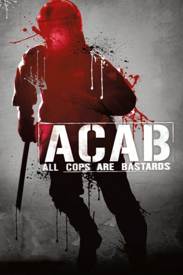
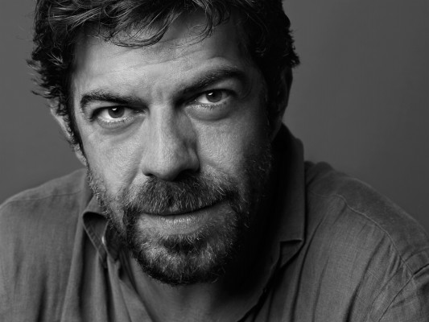

#7711 A.C.A.B.: All Cops Are Bastards
 
 IMDB-Wertung: 6.6 / 10
IMDB-Wertung: 6.6 / 10  Metascore: 0
Metascore: 0 
Das Akronym “A.C.A.B.: All Cops Are Bastards” entstand in den späten 1970er Jahren in Großbritannien und breitete sich rasant über die Fußballstadien der Welt aus. Cobra, Nero und Mazinga sind Mitglieder einer italienischen Spezialeinheit, die bei Demonstrationen und Fußballspielen eingesetzt wird. Konfrontiert mit der immer mehr zunehmenden Gewalt und frustriert von den ohnmächtigen Politikern überschreiten die drei Polizisten immer häufiger die Grenzen der erlaubten Mittel. Als der junge Polizist Adriano zu der Einheit versetzt wird, beginnt für ihn eine Zeit der Gewissenskonflikte zwischen der Loyalität zu seinen Kameraden und der Achtung von Recht und Gesetz.
Jahr: 2012
Dauer: 109 Minuten
FSK: 16
Land: Italien Studio: 01 DistributionTonspuren:
Untertitel: Deutsch,
Auflösung: 1080p (1920x816) Größe: 7342 MB
Genre: Action, Drama, Krimi
Regisseur: Stefano Sollima
Drehbuch: Carlo Bonini
Soundtrack: Mokadelic
Darsteller:
-  Pierfrancesco Favino als Cobra
- Filippo Nigro als Negro
- Marco Giallini als Mazinga
- Andrea Sartoretti als Carletto
- Domenico Diele als Adriano
- Roberta Spagnuolo als Maria
- Eugenio Mastrandrea als Giancarlo
- Paolo Giovannucci als P.M.
- Balkissa Souley Maiga als Nigeriana CPT
- Alessandro Sanguigni als Ragazzo di Sinistra
- Ilir Jacellari als Molestatore al parco (uncredited)
- Eradis Josende Oberto als Miriam
- Carlo Marino Altomonte als Uomo sfrattato
- Riccardo Angelini als Maresciallo reparto mobile
- Alessandra Antinori als Franca
- Livio Beshir als Mustafà
- Stefania Bogo als Giudice separazione Negro
- Antonio Brundu als Poliziotto casa Mazinga
- Sebastiano Colla als Poliziotto narcotici
- Fabio De Caro als Tifoso Napoletano
- Hope Johns als Nigeriana CPT
- Giorgio Marchesi als Enrico Mancini
- Gabriele Rossi als Gabriele
- Roberto Negri als Funzlonario Viminale
- Nick Nicolosi als Responsabile Scuola per Ricchi
- Fiodor Passeo als Celerino Siciliano
- Lucio Patané als Avvocato Negro
- Stefano Patti als Poliziotto Sfratto Adriano
- Mauro Pescio als Dottore Mazinga
- Lucrezia Piaggio als Arianna
- Francesco Prando als Comandante Reparto Mobile
- Alessandro Procoli als Uomo Leader Moschea
- Marco Rea als Poliziotto Narcotlei
- Giulia Smaldone als Carolina
- Souleymane Sow als Nigeriano Supermaket
- Josafat Vagni als Michele Sartoni
- Faustino Vargas Morales als Josè
- Salvatore Ceserani als Giudice (uncredited)
- Valerio Mammolotti als Celerino ferito (uncredited)
Datei: X:\2012(A-F)\A.C.A.B. All Cops Are Bastards (2012, FSK16, 1920x816).mkv seit 15.12.2017
Festplatte: HD 2012(A-M)
 Es gibt insgesamt 102 Filme in der Gruppe '2012(A-F)'
Es gibt insgesamt 102 Filme in der Gruppe '2012(A-F)'